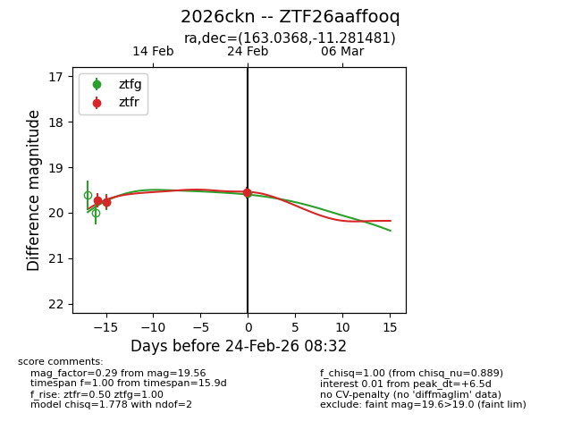
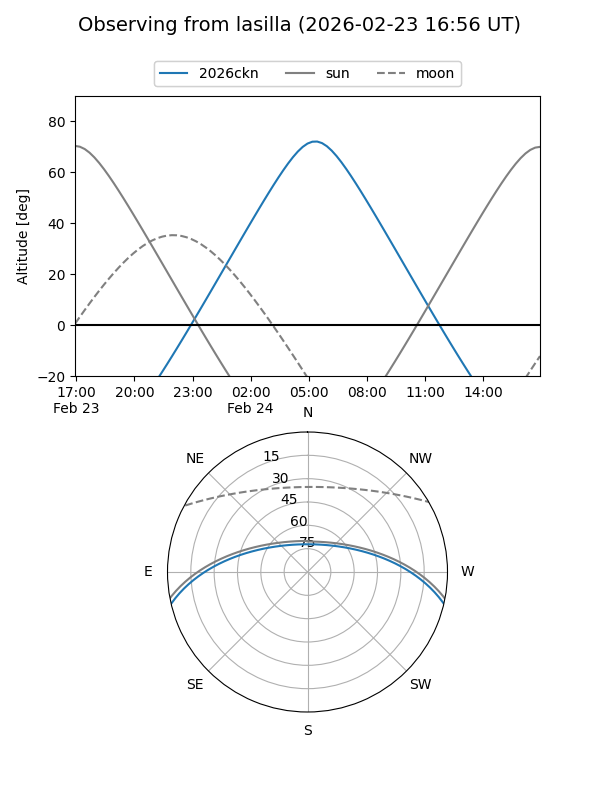
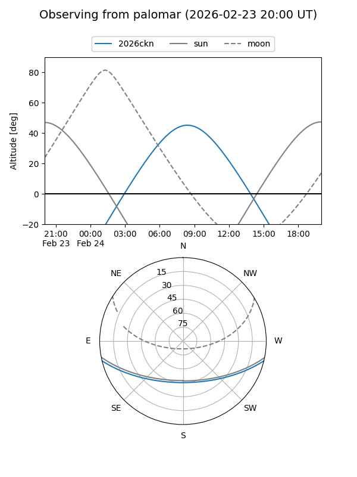

2026ckn
Target 2026ckn at 2026-02-24 09:08
Aliases and brokers:
FINK: link
Lasair: link
ALeRCE: link
TNS: link
YSE: link
alt names
ZTF26aaffooq (ztf,fink_ztf)
2026ckn (tns,yse)
Coordinates:
equatorial (ra, dec) = 163.0368,-11.28148
equatorial (HMS+DMS) = 10:52:08.83,-11:16:53.33
galactic (l, b) = (261.9833,+41.91312)
Flags:
Photometry:
last ztfg=19.56, ztfr=19.55
2 ztfg, 3 ztfr detections
Lightcurve

Visibility


Additional plots